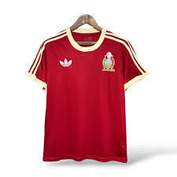

Jerseys Retro
"Revive la nostalgia del fútbol"
"Revive la nostalgia del fútbol"

$49.99
Descripción del producto se cargará aquí.
15 de junio de 2025
¡Excelente calidad! El jersey es justo como se ve en las fotos, muy cómodo y los detalles son impresionantes. ¡100% recomendado!
10 de junio de 2025
Me encanta el diseño retro, trae muchos recuerdos. La tela es suave y el envío fue rapidísimo. ¡Volveré a comprar!
5 de junio de 2025
Buen producto, aunque me gustaría que hubiera más tallas disponibles. Por lo demás, todo perfecto.